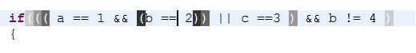
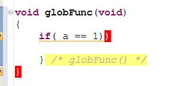
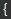

Notice that the configurations are per editor type (Java, C/C++, etc...) according to the tab selected.
Brackets surrounding the cursor screen shot:

Missing brackets screen shot:

Brackets highlighting
In this section you can choose the foreground and background colors for matching brackets and for brackets without a match.
Select on of the "highlighting types", on the left, and then the colors, on the right.
"- Default -" - This would be the configuration used if the "Use default" checkbox is checked in one of the other "highlighting types".
"Pair 1 (closest)", "Pair 2", "Pair 3", "Pair 4 (farest)"
- The colors of the 4 closest bracket pairs surrounding the cursor (or
hovered with the mouse). "Pair 1" is the 1st pair surrounding the
cursor and "Pair 4" is the 4th pair.
"Missing pair" - This is the color of brackets which have no pair. All such brackets in the document would be highlighted.
Background color styles
"None" - Draw transparent background (in other words, ignore the background color selected, and don't draw a background)
"Solid" - Draw a rectangle around the character and fill it with the background color (A, solid, black background looks like this: ).
"Outline" - Draw a rectangle
around the character, color its outline is the background color. Only
the outline is drawn, the inside of the rectangle is transparent (An,
outlined, black background looks like this: ).
Annotation
"Enable annotation" - This
option is applicable only for "Missing pair", if enabled, in addition
to highlighting of the bracket whose missing a pair, an annotation would
appear in the "overview ruler" and "vertical ruler". The annotation
preferences (such as color, etc..) is configured in the "Annotations
preferences page" (Preferences: General->Editors->Text
Editors->Annotations) under the "Bracket missing pair" annotation
type.
Surrounding brackets
This section is dedicated for bracket pairs surrounding the cursor.
The "Enable" checkbox can be used to enable/disable highlighting of
surrounding brackets. You can do this also using the toolbar button or by pressing Ctrl+[, Ctrl+S (the "Enable surrounding brackets" command).
You can choose which bracket pairs would highlighted ("{" , "[", etc..) and how many.
You can also ignore pairs whose brackets are close to each other.
Mouse hover
"Show matching pairs of the brackets near the hover point"
- If enabled, when you hover near a bracket, the bracket pair will be
highlighted automatically (up to 4 pairs can be highlighted at once).
You can also enable/disable this option using the toolbar button or by using a key binding you define for the "Enable hovered brackets" command.
"Show popup with the pair of the hovered bracket (if not visible)"
- If enabled, when hovering over a "}" (a closing curly bracket) whose
matching opening bracket (i.e. "{") is outside the visible screen
boundaries, a popup window will appear, above the editor, with 3 lines
surrounding the opening bracket (one line before and one line after).
"Unless there is a hint on the closing bracket"
- If enabled, a popup, as described in the paragraph above, will not
appear if the closing bracket has a "hint". This option is applicable
only if "Show popup with the pair of the hovered bracket (if not
visible)" is enabled.